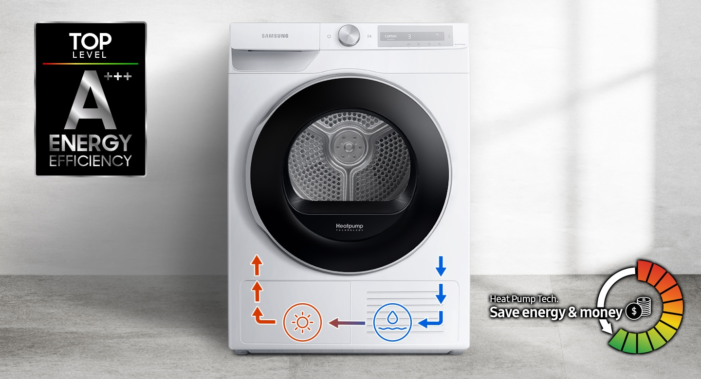

Uscare inteligentă
AI Control
Usucă haine ușor și eficient cu AI Control. Personalizează uscarea prin memorarea obiceiurilor tale, sugerând cicluri și afișând informații în timp util. Aplicația SmartThings* oferă sfaturi despre cicluri, planificarea uscării și rezolvarea problemelor de service. Pentru a oferi și mai mult confort utilizatorilor, ciclul de spălare se sincronizează cu cel de uscare.

Eficiență A+++
Eficiență energetică A+++ cu tehnologia Heat Pump
Prin tehnologia cu pompă de căldură, eficiența energetică întâlnește performanța. Uscătoarele Samsung oferă o variantă mai eficientă, mai economică* și mai delicată de a usca hainele. În locul electricității, folosim un refrigerant pentru a încălzi aerul, astfel încât este redus consumul de electricitate la jumătate.

Se deschide cum vrei
Alege direcția în care se deschide ușa reversibilă, pentru a se potrivi interiorului casei tale. Pur și simplu schimbi partea în care se deschide, pentru a se potrivi în locație, cu ceea ce este în jurul ei și cu modul în care lucrezi. De asemenea, asta înseamnă că pereții nu îi vor sta în cale! Și este transparentă, astfel încât să poți verifica ce se află în interior, cu o singură privire.

Haine fără cute
Prevenirea Cutelor
Păstrează hainele uscate, fără cute, fără să le calci. Pur și simplu selectezi Wrinkle Prevent și după ce se încheie ciclul de uscare, tamburul continuă să se rotească intermitent, fără căldură, până la 180 de minute. Astfel, împiedică hainele să stea într-un loc o perioadă îndelungată, atât timp cât este fierbinte, prevenind formarea cutelor în țesătură.